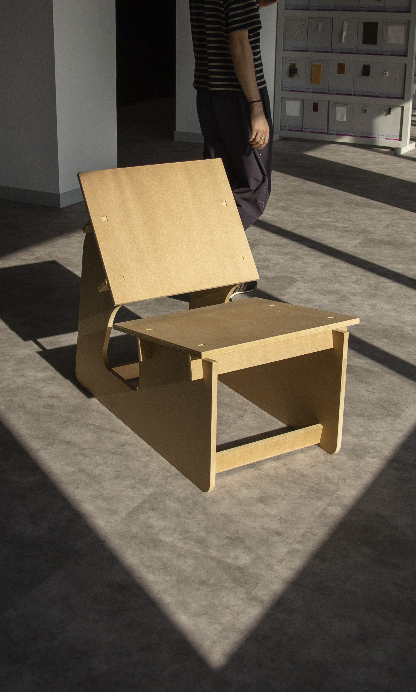
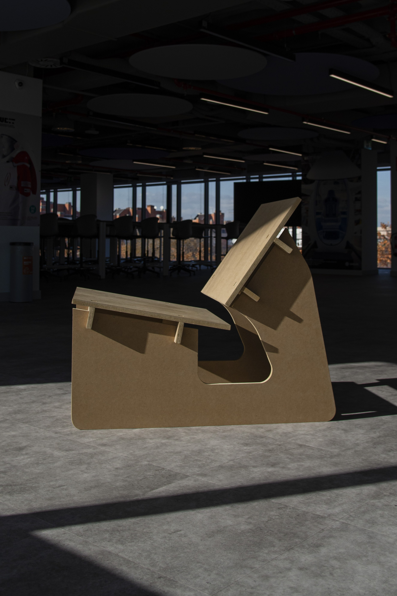
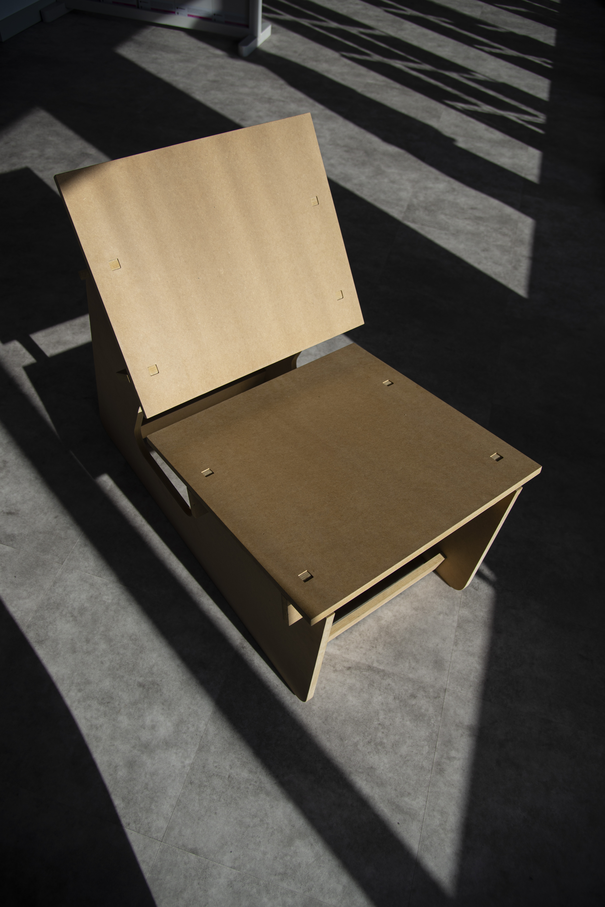

SILLONA
"SILLONA" è una sedia realizzata interamente in legno mdf e assemblata ad incastro senza l’utilizzo di viti o giunti.

Con l'obiettivo di utilizzare il legno mdf per sperimentare le sue capacità strutturali, la scelta è stata quella di realizzare una sedia dal design semplice, geometrico e accogliente.

Utilizzando software appositi per l'ottimizzazione strutturale, la struttura portante è stata progettata con una forma gentile ma precisa che sostiene i piani del sedile e dello schienale montati ad incastro, con un'inclinazione che invita a momenti di relax, di lettura o di conversazione.
L'aspetto geometrico del sedile e dello schienale, la loro inclinazione, lo spazio di aria tra di essi e la struttura e gli incastri in vista di forma quadrata sono lontani richiami alla sedia "Red and Blue" simbolo del De Stijl.
 Team:
Matteo Mengoli,
Olaf frankowicz,
Hortense Gormotte